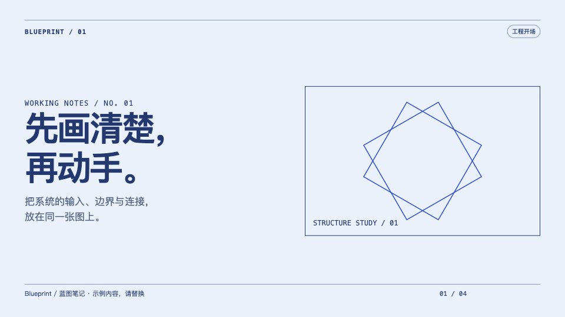
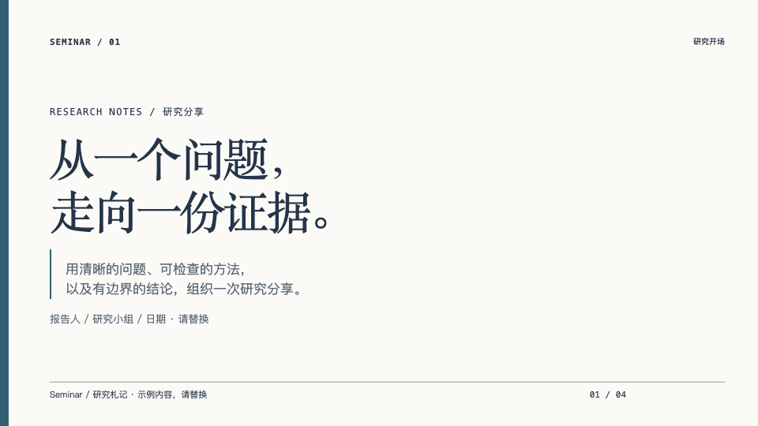
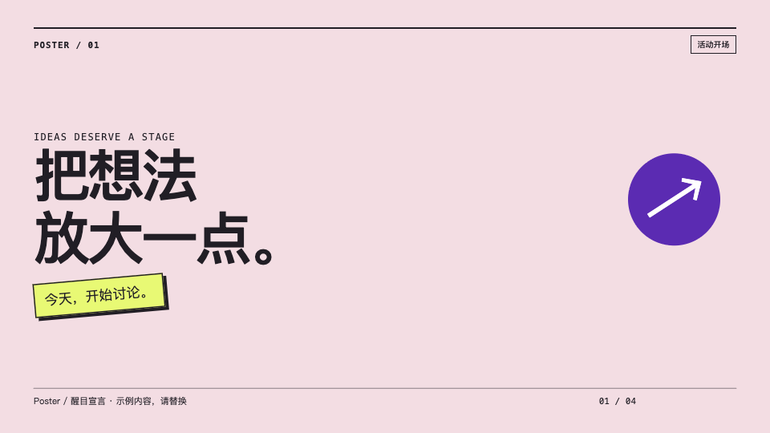
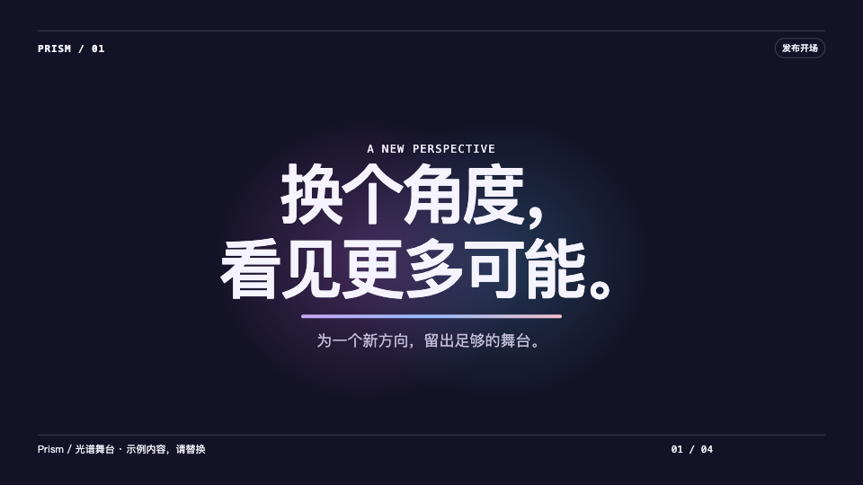
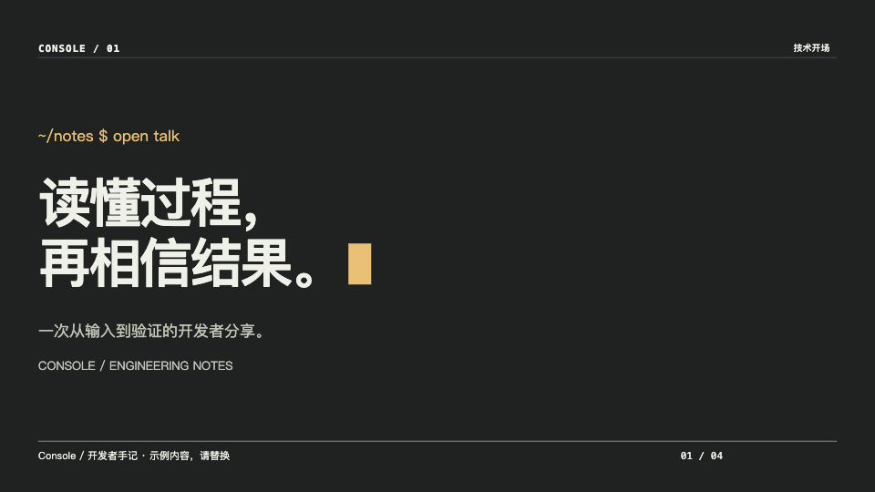
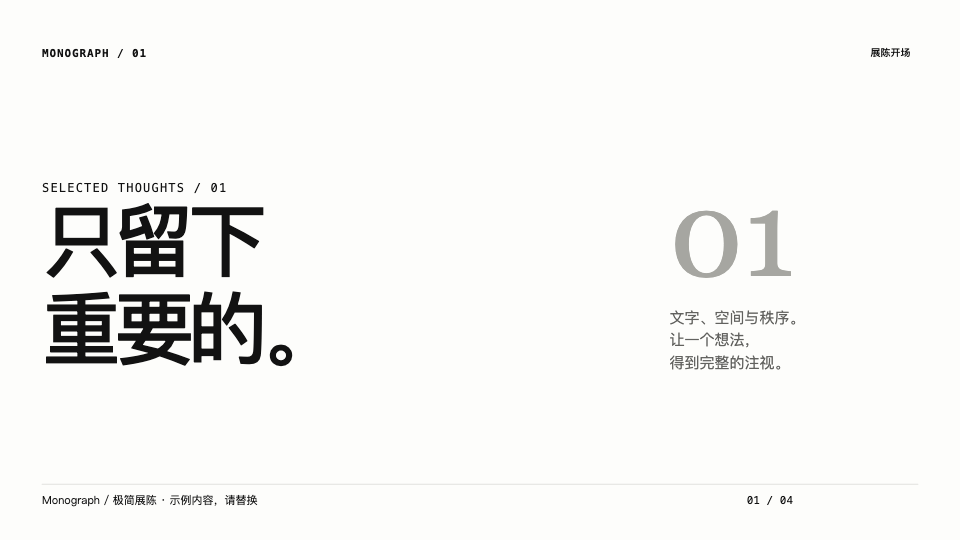
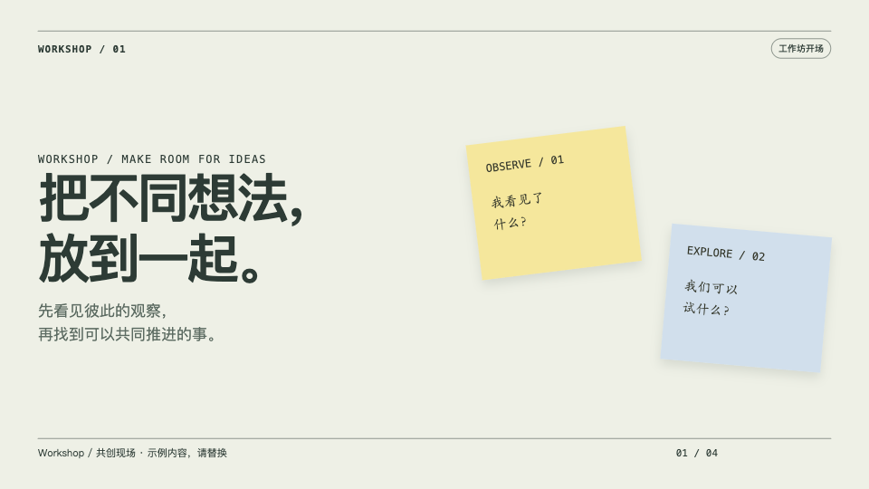
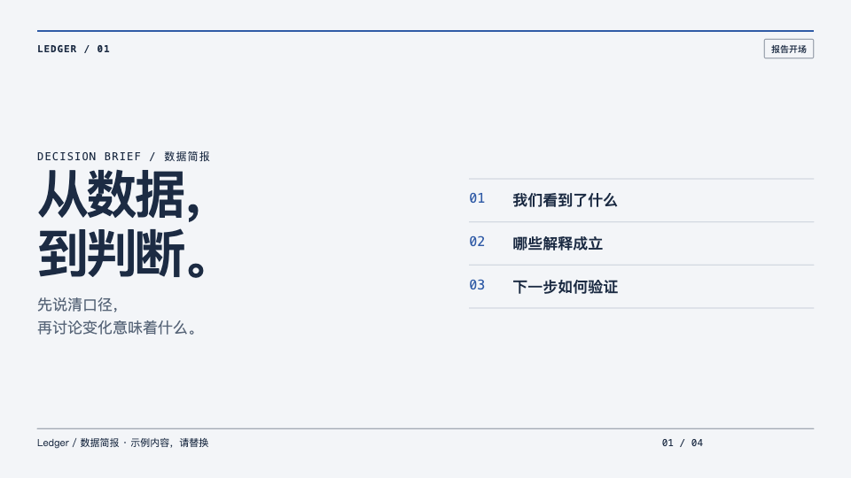
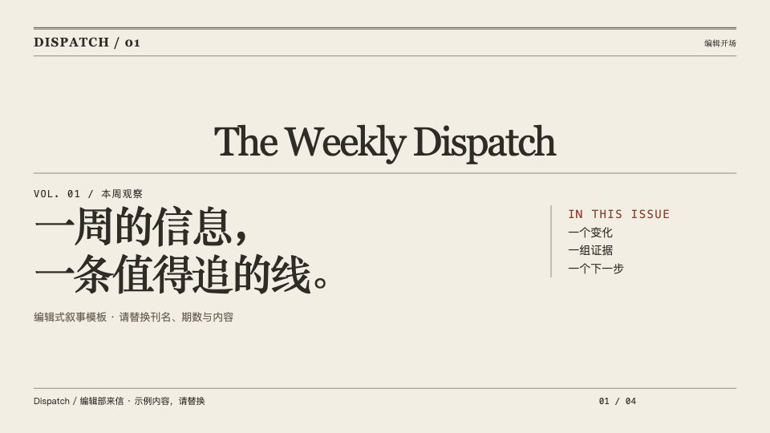
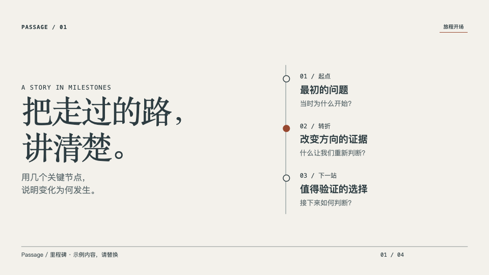

为你的故事，选一种表达。
按内容挑风格，再用完整示例试播。每套包含四种构图，复制一个 HTML 就能开始；没有在线字体，也不用安装运行依赖。
显示全部 14 套模板












选好之后，怎么开始？
先播放示例，确认适合你的内容，再下载 HTML 并替换标题、正文和页脚。使用方向键翻页，Home / End 跳到首尾。新增图片时，把素材与 HTML 一起保存；上台之前，在实际设备上检查中文换行和字号。